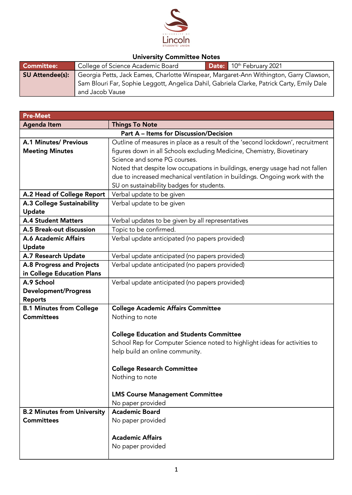

As a School Rep I have the opportunity to attend several meetings that involve the wider College of Science. To give a quick run down, the University of Lincoln consists of several colleges. A College consists of schools, one of which is the School of Computer Science. Other schools in the College of Science (CoS) are the School of Geography, School of Life Science as well as the National Centre for Food Manufacturer at Holbeach and the Lincoln Institute for Agri-Food Technology at Riseholme to name a few. This College of Science meeting is a focused review of the Academic Board items across these schools.
The CoS AB meetings are chaired by the Pro Vice Chancellor / Head of College of Science Prof Libby John. Prof John does a really great job at chairing these meetings and makes everyone from students to senior directors in the college feel very at ease. Every meeting starts with a full introduction of everyone on the call so that we all know who is in attendance. This is really well received, especially as a student does not always know who does what function in the college itself.
These meetings are arranged on a quarterly basis throughout the academic year and directly involve students to help guide the discussion. As in all of the universities formal meetings, minutes are taken and agreed at the start. These meetings have a set agenda and follow a strict plan so as to cover all points. In general they also last for around 2 hours. A key feature of the meetings is a pre-defined 20 minute breakout session with the topic decided by the 20/21 CoS School Rep, Jack Eames. The topic question at hand in this meeting was 'how can the school further highlight and support leaving students find meaningful employment through this time of Covid'. These breakout sessions are a highlight of the meeting as they allow students, lecturers and operational staff to all have a informed discussion about the topic at hand. From this, the college takes the key themes and works within the schools to try and improve, step by step, the experience for all.
One of the first things to strike you when attending these meetings as a school rep is how broad the colleges activities are. This year for instance there have been 3 new buildings developed (the medical school is just one of them), along with a significant portfolio of world class research being delivered. Everything from funding to how to engage a wider participation in university events is discussed.
As a school rep, I and other CoS school reps will meet prior to the formal session to identity key issues we want to raise and key points that we feel should be addressed. We then agree how these may be raised. These pre-meetings are held by the 20/21 SU Vice President of Education, Georgia Petts. Georgia does a pretty amazing job at pulling us all together so we all face in the same direction. We then as a team have a follow up meeting to make sure we all feel we had an opportunity to say what we wanted to say and that any questions we asked were properly answered. Where we decide they have not been properly answered Georgia will look to re-raise them or escalate them at other formal session. Georgia does difficult job really well and I have no doubt that without Georgia's guidance the meetings would not be as smooth.
It is not possible for a blog to detail all of the nuances of the meeting but to give some insight the CoS AB meeting minutes are below. I am very happy to take questions on these so please feel free to contact me if you have anything you want to ask. Overall, these meetings are very useful and very engaging. All staff members treat everyone in attendance with respect and always carefully listen to what is being said. They are in many ways the most fulfilling formal meetings of the SoCs School Rep role. I highly encourage any of you, if you can, to sit in on these meetings to get a fuller perspective of the day to day activities a university performs - it is extremely enlightening, as well as being really fun!
Remember, we are here to help. If you are not having the experience you want then please reach out and let us know. You can contact any one of us through our email links or anonymously using our Feedback page. All emails are received in the strictest of confidence. No concern or idea is too small.